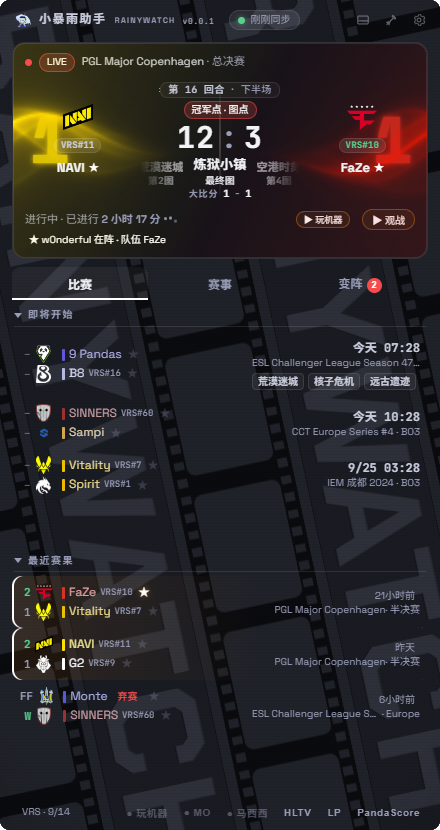
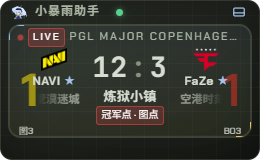

RainyWatch 小暴雨助手
“愿虹光永驻天空,也愿有冷雨落下。”
常驻桌面的 CS2 赛况小组件:谁在打、比分多少、下一场几点,一瞥即知。
免安装单文件,双击即用;默认数据来自 Liquipedia 公开接口,无需注册任何账号。

一瞥,即知。
RainyWatch 挂在桌面角落:现在谁在打、比分多少、下一场几点、最近谁赢了、阵容有什么变动——不用切窗口,扫一眼就知道。
界面提供中文 / English 双语;窗口可置顶、可用图钉钉在桌面、可缩成一条比分胶囊,关闭后收进托盘常驻。
为「扫一眼」而生
直播主卡
中央大数字是当前图回合比分,配图序带与系列大比分;手枪局、图点、加时、赛点等阶段标签全部由赛制自动推导;点击比分一键复制。
关注与提醒
关注队伍与选手,命中比赛整行置顶高亮;开赛前 5 / 10 / 15 / 30 分钟弹系统提醒,关注的比赛结束后推送赛果速报。
变阵解读
替补席、租借、擢升一线队、退役……十余种转会动作各配一句话解说;新增变阵挂 NEW 徽章并弹系统通知,国籍以中文显示。
赛程与赛果
开赛倒计时随时区自动换算,弃赛场显示 FF / W 旗标;VRS 世界排名徽章与 S / A / B / C 赛事评级一目了然。
七套主题与迷你条
即点即换,圆形扩散过渡;队色对撞波、底片氛围背景等动效逐项可关;可缩为迷你比分胶囊,双击还原。

省心常驻
缓存秒开,Liquipedia 官方 API 合规限速;发现新版本只轻轻提醒;托盘常驻、窗口置顶、鼠标穿透、开机自启一应俱全。
除标注「真实数据」外,截图均来自内置演示数据,队伍 / 赛事 / 比分仅为示例。
开箱即用,按需增强
Liquipedia 公开接口
零配置:赛程、赛果、图序条、VRS 排名与变阵,装上就有。
PandaScore token(免费档)
在 pandascore.co 免费申请 token 填进设置:直播比赛显示系列大比分与图号,45 秒同步。
PandaScore 付费档
回合级实时比分进入主卡中央大数字,追分时刻一目了然。
所有凭证只保存在你自己的电脑上,不经由任何第三方服务器中转;应用不内置任何密钥,完全免费、无广告、无任何商业行为。
一份可以自己编译的代码
Electron 与原生 JavaScript 构建,不依赖前端框架;koffi 提供全局热键等系统能力。仓库同时收录离线开发工具与打包脚本,从克隆到产出便携版 exe 一条命令。
AGPL-3.0 许可,欢迎批评、Issue 与 PR;衍生与服务化需同样开源。